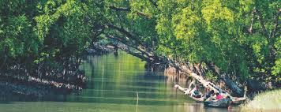
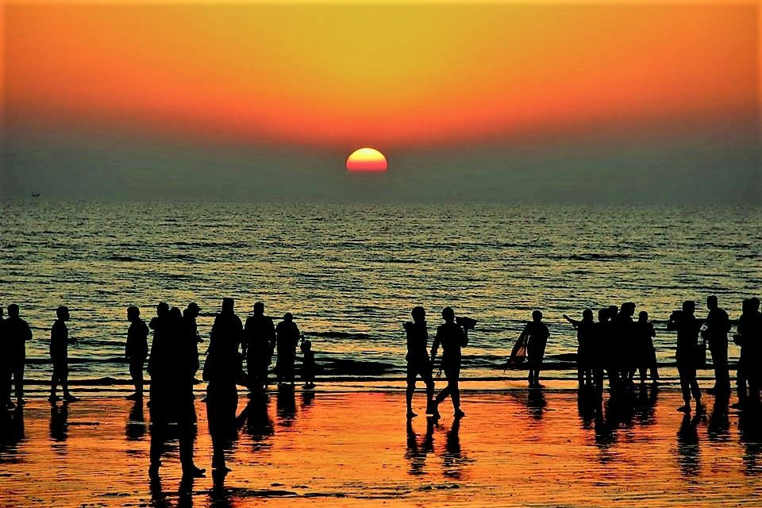

Being in nature, or even viewing scenes of nature, reduces anger, fear, and stress and increases pleasant feelings. Exposure to nature not only makes you feel better emotionally, it contributes to your physical wellbeing, reducing blood pressure, heart rate, muscle tension, and the production of stress hormones.
Sundarban
Sundarbans, The largest single block of tidal halophytic mangrove forest in the world, located in the southwestern part of Bangladesh. It lies on the Ganges-Brahmaputra Delta at the point where it merges with the bay of bengal. The forest lies a little south to the Tropic of Cancer between the latitudes 21°30'N and 22°30'N, and longitudes 89°00'E and 89°55'E. With its array of trees and wildlife the forest is a showpiece of natural history. It is also a centre of economic activities, such as extraction of timber, fishing and collection of honey. The forest consists of about 200 islands, separated by about 400 interconnected tidal rivers, creeks and canals.

Saint Martin
Poets call Saint Martin's Island a piece of heaven on earth. The phrase aptly describes the almost indescribable beauty of Bangladesh's only coral island. It's sand dunes, long beach studded with natural sand stones, shoreline full of colorful corals, thickets of keya (Pandanus odorifer) trees and coconut groves seem to have indeed turned it into a piece of heaven.
.JPG)
Cox's Bazar
The scenic waves, the serene surroundings; one can’t help but wonder how nature can be so beautiful and calming at the same time. It is but a marvel and privilege to be able to stand in front of that vast expanse of water and take in the alluring view in front of the eyes. They say, “Beauty lies in the eyes of the beholder”, but what they don’t say is, sometimes the sight in front of you turns out to be so marvellous that even the cynic starts to believe in better things.
